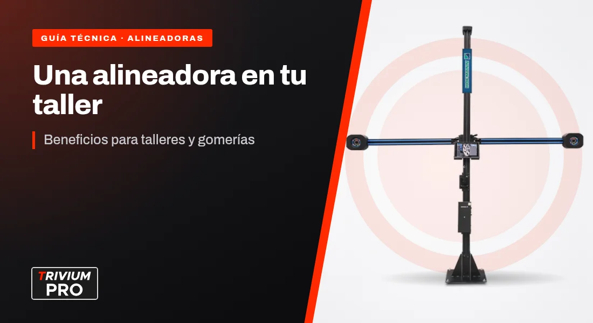

Si tienes un taller o una gomería, seguramente buscas maneras de destacar frente a la competencia y ofrecer el mejor servicio posible a tus clientes. Una de las herramientas clave para lograrlo es una alineadora de ruedas. ¿Por qué es tan importante? A continuación, te explicamos los principales beneficios de contar con este equipo en tu negocio.
1. Incrementa tus ingresos
La alineación de ruedas es un servicio esencial y recurrente en el mantenimiento vehicular. Al contar con una alineadora en tu taller, puedes ofrecer este servicio de manera eficiente y profesional, generando ingresos adicionales. Además, al ser un servicio altamente demandado, podrás atraer nuevos clientes que podrían solicitar también otros servicios.
2. Mejora la satisfacción del cliente
Los clientes valoran un trabajo preciso y de calidad. Una alineadora avanzada garantiza mediciones exactas y ajustes adecuados, lo que se traduce en una conducción más segura y cómoda para ellos. Cuando tus clientes notan los beneficios inmediatos de una alineación profesional, es más probable que vuelvan a tu taller en el futuro.
3. Optimiza el uso de los neumáticos
Un vehículo con ruedas mal alineadas genera un desgaste desigual en los neumáticos, reduciendo su vida útil. Al ofrecer un servicio de alineación, ayudas a tus clientes a prolongar la duración de sus neumáticos, ahorrándoles dinero y fortaleciendo la confianza en tu negocio.
4. Aumenta la eficiencia operativa
Con una alineadora moderna, como una 3D o 5D, puedes realizar diagnósticos y ajustes rápidos, reduciendo los tiempos de espera y aumentando la capacidad de atención en tu taller. Esto se traduce en mayor productividad y un flujo continuo de trabajo.
5. Mejora tu reputación
Un taller equipado con tecnología avanzada genera confianza y profesionalismo. Contar con una alineadora de última generación te posiciona como un referente en el sector, atrayendo clientes que buscan calidad y precisión.
6. Cumples con las normativas y exigencias actuales
Con el aumento en los controles vehiculares y la creciente conciencia sobre la seguridad vial, ofrecer servicios de alineación es casi indispensable. Un vehículo bien alineado contribuye a una mejor estabilidad, menor consumo de combustible y mayor seguridad en carretera.
7. Retorno de inversión asegurado
Aunque una alineadora representa una inversión inicial, los beneficios a corto y largo plazo la convierten en una herramienta rentable. La demanda constante de servicios de alineación asegura un flujo continuo de ingresos.
Conclusión
Incorporar una alineadora en tu taller o gomería no solo mejora la calidad de los servicios que ofreces, sino que también aumenta tus ingresos y la satisfacción de tus clientes. La tecnología actual te permite realizar trabajos rápidos, precisos y seguros, posicionándote como un negocio confiable y profesional. ¡No te quedes atrás y da el siguiente paso para hacer crecer tu taller!